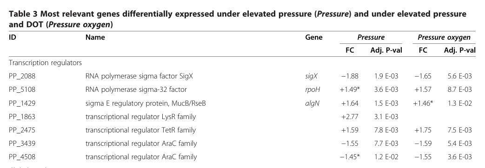

RpoH (sigma-32) is the heat-shock sigma factor of Pseudomonas putida, a member of the sigma-70 (RpoD) family of RNA polymerase sigma factors. As a dissociable specificity subunit of RNA polymerase, it binds the core enzyme to form an alternative holoenzyme that directs transcription initiation from a distinct class of heat-shock promoters. Through region 2 it contacts core RNAP and recognizes the -10 promoter element and promotes DNA melting, and through its C-terminal region 4 helix-turn-helix motif it recognizes the -35 element. RpoH activates the regulon encoding molecular chaperones and ATP-dependent proteases (e.g. DnaK/DnaJ/GrpE, GroEL/GroES, HtpG, ClpB, Lon, FtsH, IbpA) that refold or degrade damaged proteins, thereby maintaining protein homeostasis under heat and other proteotoxic stresses (including aromatic solvent exposure and elevated pressure). Its activity and stability are themselves controlled by a chaperone- and protease-mediated negative feedback circuit. RpoH acts in the cytoplasm as part of the RNA polymerase holoenzyme on the bacterial chromosome.
| GO Term | Evidence | Action | Reason |
|---|---|---|---|
|
GO:0003677
DNA binding
|
IEA
GO_REF:0000104 |
KEEP AS NON CORE |
Summary: RpoH binds promoter DNA (recognizing -10 and -35 elements) as part of the RNA polymerase holoenzyme; DNA binding is a genuine activity but is a general parent of the more informative sigma factor activity term.
Reason: Sigma factors do bind DNA sequence-specifically via region 2 (-10) and region 4 (-35, HTH motif), so the annotation is not wrong. However, it is a generic supporting molecular function; the core, more informative MF for this gene is GO:0016987 sigma factor activity. Retain as non-core.
|
|
GO:0003700
DNA-binding transcription factor activity
|
IEA
GO_REF:0000002 |
REMOVE |
Summary: This InterPro2GO mapping assigns the general transcription factor activity term. By GO convention, bacterial sigma factors are NOT classified as DNA-binding transcription factors; they are basal/general transcription machinery and should receive GO:0016987 sigma factor activity instead.
Reason: GO has an explicit convention that sigma factors are not DNA-binding transcription factors (GO:0003700) but rather are captured by GO:0016987 sigma factor activity, which is already annotated here. GO:0003700 is the wrong molecular function class for a sigma factor and is redundant/misleading. The correct MF term is present.
|
|
GO:0005737
cytoplasm
|
IEA
GO_REF:0000120 |
ACCEPT |
Summary: RpoH acts in the cytoplasm as part of the RNA polymerase holoenzyme on the nucleoid; cytoplasmic localization is consistent with UniProt subcellular location and with its role as a soluble, non-secreted transcription factor.
Reason: Consistent with UniProt SUBCELLULAR LOCATION (Cytoplasm) and the known biology of sigma factors acting on the chromosome within the cytoplasm/nucleoid.
|
|
GO:0006352
DNA-templated transcription initiation
|
IEA
GO_REF:0000120 |
ACCEPT |
Summary: The primary biological role of RpoH is to promote sequence-specific transcription initiation by RNA polymerase at heat-shock promoters. This is a core process term for the gene.
Reason: Directly captures the central function of a sigma factor as an initiation factor (UniProt FUNCTION states sigma factors promote attachment of RNAP to initiation sites). Core biological process.
|
|
GO:0006355
regulation of DNA-templated transcription
|
IEA
GO_REF:0000002 |
KEEP AS NON CORE |
Summary: As an alternative sigma factor, RpoH regulates transcription of the heat-shock regulon. The term is correct but general relative to the more specific initiation terms.
Reason: Correct and consistent with sigma factor biology, but a broad regulatory term. The more specific GO:0006352 (transcription initiation) and GO:2000142 (regulation of transcription initiation) better capture the precise role; retain as non-core context.
|
|
GO:0009408
response to heat
|
IEA
GO_REF:0000104 |
ACCEPT |
Summary: RpoH (sigma-32) is the master regulator of the heat-shock response, induced after heat upshift and driving chaperone/protease expression. Response to heat is a well-supported core biological process for this gene.
Reason: Strongly supported by the canonical biology of sigma-32 and by P. putida-specific data showing rapid induction of RpoH-dependent heat-shock genes after temperature upshift (Ito et al. 2014). Core process.
Supporting Evidence:
file:PSEPK/rpoH/rpoH-deep-research-falcon.md
In Pseudomonas putida the heat-shock response is controlled by sigma-32 (encoded by rpoH); heat-shock gene expression increases within ~10 min of temperature upshift and correlates with sigma-32 levels, and rpoH (PP_5108) is upregulated under proteotoxic stresses such as elevated pressure and aromatic solvent exposure.
|
|
GO:0010468
regulation of gene expression
|
IEA
GO_REF:0000104 |
KEEP AS NON CORE |
Summary: A very general regulatory term; correct in essence but far less informative than the specific transcription-initiation regulation terms already annotated.
Reason: Not incorrect, but high-level and subsumed by the more specific transcription regulation/initiation terms. Retain as non-core rather than core.
|
|
GO:0016987
sigma factor activity
|
IEA
GO_REF:0000120 |
ACCEPT |
Summary: This is the correct, specific molecular function for RpoH. It binds RNA polymerase core enzyme and confers heat-shock promoter specificity. This is the core molecular function of the gene.
Reason: Precisely matches the gene product's identity as a sigma-70 family RpoH sigma factor (UniProt, HAMAP MF_00961, TIGR02392). This is the preferred MF term for sigma factors per GO convention.
|
|
GO:2000142
regulation of DNA-templated transcription initiation
|
IEA
GO_REF:0000108 |
ACCEPT |
Summary: RpoH regulates which genes RNA polymerase initiates transcription at, so regulation of transcription initiation accurately captures its role. Inferred from the sigma factor activity annotation.
Reason: Logically consistent with sigma factor activity (the GOC inference is from GO:0016987) and biologically accurate for a promoter-selectivity factor.
|
The research report should be a detailed narrative explaining the function, biological processes, and localization of the gene product. Citations should be given for all claims.
You should prioritize authoritative reviews and primary scientific literature when conducting research. You can supplement
this with annotations you find in gene/protein databases, but these can be outdated or inaccurate.
We are specifically interested in the primary function of the gene - for enzymes, what reaction is catalyzed, and what is the substrate specificity? For transporters, what is the substrate? For structural proteins or adapters, what is the broader structural role? For signaling molecules, what is the role in the pathway.
We are interested in where in or outside the cell the gene product carries out its function.
We are also interested in the signaling or biochemical pathways in which the gene functions. We are less interested in broad pleiotropic effects, except where these elucidate the precise role.
Include evidence where possible. We are interested in both experimental evidence as well as inference from structure, evolution, or bioinformatic analysis. Precise studies should be prioritized over high-throughput, where available.
The literature gathered matches the UniProt target Q7CCA6 because it explicitly identifies PP_5108 in P. putida KT2440 as rpoH, annotated as the RNA polymerase sigma-32 factor (σ32/RpoH), which is the canonical heat-shock sigma factor in Gram-negative bacteria. In KT2440 pressure transcriptomics, PP_5108 is labeled “RNA polymerase sigma-32 factor” with gene name rpoH, confirming the locus-to-function mapping. (follonier2013newinsightson pages 5-6)
RpoH (σ32) is an alternative sigma factor in the σ70 family. Sigma factors are RNA polymerase (RNAP) specificity subunits that redirect RNAP to particular promoter classes. In Gram-negative bacteria, σ32 is the major transcriptional regulator of the heat-shock response (HSR), activating genes that restore protein homeostasis (proteostasis)—molecular chaperones and proteases that refold or degrade damaged proteins. (potvin2008sigmafactorsin pages 3-5, ito2014geneticandphenotypic pages 2-3)
In a widely cited Pseudomonas-focused review, RpoH is described as an σ70-like factor with substantial similarity to E. coli σ32 (noted as ~61% identity for the P. aeruginosa RpoH). It is responsible for the canonical heat-shock induction response and supports basal expression of multiple heat-shock proteins. (potvin2008sigmafactorsin pages 3-5)
σ70-family sigma factors share conserved regions that implement promoter recognition and RNAP interaction. In Pseudomonas, these conserved σ70-family regions are summarized as:
- Region/domain 2: most conserved; involved in core RNAP binding, DNA melting, and recognition of the −10 element.
- Region/domain 4: contains an HTH DNA-binding motif for recognition of the −35 element.
These concepts support functional inference for Q7CCA6 (RpoH subfamily) in promoter recognition and transcription initiation. (potvin2008sigmafactorsin pages 3-5)
While regulon membership differs across organisms, a quantitative reference point for σ32 control comes from E. coli: σ32 is cited as controlling ~50 transcriptional units (~90 genes), emphasizing its broad role in proteostasis. (ito2014geneticandphenotypic pages 2-3)
A σ32 promoter consensus reported in the P. putida heat-shock genetics study (citing the E. coli consensus) is CTTGAA N13–17 CCCCATNT, and P. putida candidate σ32 promoter sequences were identified upstream of cbpA, hfq (PP4894), and secA (PP1345). (ito2014geneticandphenotypic pages 6-8)
RpoH is not an enzyme; its primary function is sequence-specific transcription initiation control. RpoH binds the RNAP core enzyme to form an alternative holoenzyme and drives transcription from heat-shock promoters, upregulating chaperones/proteases and related stress-repair functions. This is the central mechanistic meaning of “heat shock sigma factor.” (ito2014geneticandphenotypic pages 2-3, ito2014geneticandphenotypic pages 6-8)
In Pseudomonas putida, the heat-shock response is described as being controlled by σ32 (encoded by rpoH) and implemented by conserved chaperone/protease systems, notably DnaK/DnaJ/GrpE and GroEL/GroES chaperone machines and ATP-dependent proteases (including FtsH) that together establish a feedback-regulated proteostasis circuit. (ito2014geneticandphenotypic pages 1-2, ito2014geneticandphenotypic pages 2-3)
RpoH functions where transcription occurs: it acts as part of the RNAP holoenzyme on the bacterial chromosome in the cytoplasm/nucleoid (i.e., it is not secreted and does not act in the periplasm). Its regulatory targets include cytosolic chaperones (DnaK/DnaJ/GrpE; GroEL/GroES) and proteases; regulation also involves the membrane-embedded protease FtsH, linking cytosolic σ32 levels to membrane-associated proteolysis. (ito2014geneticandphenotypic pages 1-2, ito2014geneticandphenotypic pages 2-3)
A central current model is chaperone-mediated negative feedback: when proteins misfold under stress, chaperones are titrated away from σ32, freeing σ32 to activate heat-shock transcription; as chaperone levels rise, they re-bind/inactivate σ32 and promote its turnover.
In P. putida, σ32 activity/quantity is controlled by DnaK/DnaJ/GrpE and GroEL/GroES, and σ32 is degraded by a membrane ATP-dependent protease (implicated as FtsH) with chaperone assistance. (ito2014geneticandphenotypic pages 1-2, ito2014geneticandphenotypic pages 2-3)
σ32 induction after heat shock is described as transient, peaking at ~5–15 minutes, and in P. putida heat-shock experiments increased expression of heat-shock genes occurs within ~10 minutes and correlates with σ32 levels. Moreover, rpoH mRNA can continue increasing even as σ32 protein levels decline, indicating layered transcriptional/post-transcriptional regulation. (ito2014geneticandphenotypic pages 2-3, ito2014geneticandphenotypic pages 6-8)
While not direct rpoH knockouts, genetic perturbations in σ32 effector systems demonstrate the pathway’s biological necessity:
- A ΔclpB mutant in P. putida shows normal heat-shock protein synthesis (except ClpB) but is highly temperature sensitive and cannot disaggregate thermo-induced aggregates, demonstrating that σ32-driven proteostasis requires specific disaggregation capacity for survival after heat stress. (ito2014geneticandphenotypic pages 1-2)
- A ΔdnaJ mutant is temperature sensitive and accumulates more (especially high-molecular-weight) aggregates upon heat stress; CbpA can partially substitute for DnaJ, consistent with σ32-regulated tuning of DnaK co-chaperone capacity in P. putida. (ito2014geneticandphenotypic pages 1-2, ito2014geneticandphenotypic pages 2-3)
Under elevated pressure conditions relevant to industrial-scale bioreactors, KT2440 microarrays show upregulation of rpoH (PP_5108) alongside canonical heat-shock genes. Specifically:
- rpoH (PP_5108): +1.49 fold-change (adjusted p = 3.6×10−3) under pressure; +1.57 (adjusted p = 8.7×10−3) under pressure + elevated oxygen.
- Chaperone genes are co-induced: htpG +1.65/+1.92, groES +1.61/+1.77, groEL +1.78/+2.19, consistent with activation of a heat-shock-like proteostasis response. (follonier2013newinsightson pages 5-6, follonier2013newinsightson media 908730bc)
In a KT2440 study examining toluene and related aromatics, induced proteins are described as belonging to the RpoH regulon, including GroES, GroEL, GrpE, Lon protease, DnaK, and IbpA, linking solvent exposure to heat-shock/proteostasis activation. (dominguezcuevas2006transcriptionaltradeoffbetween pages 7-8)
Quantitatively, large inductions were observed for multiple heat-shock/proteostasis genes upon aromatic exposure (selected examples): HslU 12.03-fold (o-xylene), DnaK 6.43-fold (o-xylene), HSP20 family protein 47.05-fold (toluene), and IbpA up to 6.46-fold (3MB), illustrating strong compound-specific activation of proteostasis pathways. (dominguezcuevas2006transcriptionaltradeoffbetween pages 7-8)
A 2023 study in P. putida DOT-T1E (a solvent-tolerant strain, KT2440 background) exposed to aromatics (styrene/trans-cinnamic acid) reported induction of multiple chaperones and proteostasis-related proteins including GroEL, SurA, HtpG, and GroSL, with associated oxidative-stress defenses and efflux systems; some genes were overexpressed by up to 7.7-fold and ATP synthase genes induced 2.2–5.2-fold, indicating substantial physiological burden and engagement of stress repair systems relevant to industrial aromatic production. (garciafranco2023insightsintothe pages 9-10, garciafranco2023insightsintothe pages 10-11)
A review of Pseudomonas stress responses emphasizes that heat-shock systems (including σ32/RpoH control and RNA thermosensors) can be leveraged for industrial applications. It highlights ROSE-type RNA thermometers in heat-shock gene regulation; in P. putida, a ROSE element precedes ibpA (small heat-shock protein), illustrating temperature-responsive post-transcriptional control within the broader σ32-linked heat-shock network. (craig2021leveragingpseudomonasstress pages 7-9)
As a concrete process-relevant example, P. putida KT2440 heterologous rhamnolipid production increased by >60% when temperature was raised from 30°C to 37°C, supporting the concept that temperature shifts can be used as a practical control input interacting with heat-shock regulatory circuitry. (craig2021leveragingpseudomonasstress pages 7-9)
The same review notes that industrial workflows expose bacteria to temperature extremes (e.g., drying and sterilization steps) and that survival relies on “chaperones, proteases, thermosensors, and alternative sigma factors.” This frames RpoH-centered proteostasis as directly relevant to strain engineering for robustness and to formulation processes (e.g., drying). (craig2021leveragingpseudomonasstress pages 5-6, craig2021leveragingpseudomonasstress pages 11-12)
A 2024 PLOS Genetics study applied genome-wide binding assays and transcriptomic systems biology to quantify sigma-factor regulatory dynamics during heat shock (in Salmonella as a model). While not P. putida, it exemplifies the current best practice for defining sigma regulons (ChIP-based occupancy + RNA-seq integration + iModulon inference) and produces quantitative benchmarks:
- Binding sites under control conditions: RpoH 181, with +40 new and −8 lost after heat shock.
- RpoH sigmulon size: 151 genes (93 TUs) under control vs 163 genes (98 TUs) after heat shock; 43 RpoH sigmulon genes changed significantly in expression.
- Overlap with housekeeping sigma RpoD: ~28.7% (control) and ~24.8% (heat shock), indicating shared/competitive promoter use.
These results provide up-to-date quantitative framing for σ32 network plasticity and sigma competition, which are likely relevant principles for Pseudomonas RpoH biology even if organism-specific maps differ. (park2024unveilingthenovel pages 5-7, park2024unveilingthenovel pages 4-5)
A 2024 FEMS Microbiology Reviews article quantifies stress-related gene inventories and regulatory capacity in the P. putida group, offering updated genomic context for KT2440 (noting its robustness). It reports that KT2440 encodes 10 universal stress proteins, 7 cold shock proteins, 5 heat shock proteins, and that ~10% of the genome is devoted to regulatory proteins, alongside extensive efflux capacity (e.g., 14 RND efflux pumps across four subfamilies). Although RpoH is not singled out in the excerpted passage, these data contextualize σ-factor–mediated stress regulation as embedded within a large regulatory repertoire supporting environmental and industrial resilience. (udaondo2024unravelingthegenomic pages 14-16)
Collectively, the evidence supports functional annotation of rpoH (Q7CCA6; PP_5108) in KT2440 as a σ70-family alternative sigma factor (σ32) that orchestrates a proteostasis-centered stress response. The strongest organism-specific signals are that KT2440/KT2442 quickly induces σ32-dependent programs upon heat upshift (minutes scale), and that diverse industrially relevant stresses that cause protein damage (aromatic solvents; elevated pressure/oxygen transfer conditions) activate rpoH-linked chaperone/protease expression, reflecting that these stresses converge on the same proteostasis bottleneck. (ito2014geneticandphenotypic pages 6-8, follonier2013newinsightson pages 5-6, dominguezcuevas2006transcriptionaltradeoffbetween pages 7-8)
| Claim / functional element | Evidence type | Key quantitative data | Stress condition / context | Source and URL |
|---|---|---|---|---|
| Identity: PP_5108 in P. putida KT2440 is rpoH, annotated as RNA polymerase sigma-32 factor (RpoH) | Omics annotation + organism-specific literature | Table entry explicitly maps PP_5108 = rpoH = RNA polymerase sigma-32 factor; functional studies in P. putida state rpoH encodes σ32 | KT2440 transcriptome under elevated pressure; KT2442 heat-shock genetics | Follonier et al. 2013 Microbial Cell Factories https://doi.org/10.1186/1475-2859-12-30; Ito et al. 2014 MicrobiologyOpen https://doi.org/10.1002/mbo3.217 (follonier2013newinsightson pages 5-6, ito2014geneticandphenotypic pages 1-2) |
| Induction kinetics: RpoH/σ32 is rapidly induced after heat shift and correlates with hsp induction | Experiment | σ32 induction is described as transient, peaking at ~5–15 min after heat shock; in P. putida, hsp gene expression increased within ~10 min and correlated with σ32 level | Heat-shock response in P. putida KT2442 | Ito et al. 2014 MicrobiologyOpen https://doi.org/10.1002/mbo3.217 (ito2014geneticandphenotypic pages 2-3, ito2014geneticandphenotypic pages 6-8) |
| Regulon size / promoter logic: RpoH directs RNAP to heat-shock promoters; canonical σ32 promoter motif reported | Experiment + comparative regulatory analysis | E. coli σ32 regulon cited as ~50 transcriptional units / ~90 genes; reported σ32 promoter consensus CTTGAA N13-17 CCCCATNT; candidate P. putida σ32-regulated genes include cbpA, hfq, secA | Heat-shock transcriptional regulation; inference used in P. putida promoter searches | Ito et al. 2014 MicrobiologyOpen https://doi.org/10.1002/mbo3.217 (ito2014geneticandphenotypic pages 6-8) |
| Mechanistic regulation: RpoH activity and abundance are controlled by chaperones and proteolysis | Review + experiment | DnaK/DnaJ/GrpE and GroEL/GroES bind/inactivate σ32; FtsH degrades σ32; P. putida dnaJ mutant is temperature sensitive and accumulates more protein aggregates, while clpB mutant is heat sensitive and defective in aggregate solubilization | Heat-shock quality-control circuit in cytoplasm | Ito et al. 2014 MicrobiologyOpen https://doi.org/10.1002/mbo3.217; Potvin et al. 2008 FEMS Microbiology Reviews https://doi.org/10.1111/j.1574-6976.2007.00092.x (ito2014geneticandphenotypic pages 1-2, potvin2008sigmafactorsin pages 3-5, ito2014geneticandphenotypic pages 2-3) |
| Protein family / domain context: RpoH is an alternative sigma-70 family sigma factor for heat-shock transcription | Review | RpoH shows 61% identity to E. coli σ32; σ70-family architecture includes conserved domain 2 (core RNAP binding, DNA melting, -10 recognition) and domain 4 (HTH, -35 recognition) | General bacterial transcription; relevant to Pseudomonas RpoH annotation | Potvin et al. 2008 FEMS Microbiology Reviews https://doi.org/10.1111/j.1574-6976.2007.00092.x (potvin2008sigmafactorsin pages 3-5) |
| Pressure-associated induction in KT2440: rpoH and canonical heat-shock genes are upregulated | Omics (microarray; supported by qRT-PCR for most tested genes) | Under elevated pressure: rpoH +1.49 (adj. P = 3.6E-03); with pressure + O2: +1.57 (adj. P = 8.7E-03). Associated genes: htpG +1.65 / +1.92, groES +1.61 / +1.77, groEL +1.78 / +2.19, grpE +1.33 | KT2440 under elevated pressure and elevated pressure + dissolved oxygen; bioprocess-relevant stress | Follonier et al. 2013 Microbial Cell Factories https://doi.org/10.1186/1475-2859-12-30 (follonier2013newinsightson pages 5-6, follonier2013newinsightson media 908730bc, follonier2013newinsightson media 43885585) |
| Solvent response link: aromatic solvent stress recruits the RpoH heat-shock program | Omics + experiment | Toluene/o-xylene exposure induced proteins assigned to the RpoH regulon, including GroES, GroEL, GrpE, Lon, DnaK, IbpA; activation of the TOL meta operon was reported to require the contribution of σ32 and/or σ38 host factors | KT2440 exposed to toluene/aromatic solvents; proteotoxic stress tradeoff with metabolism | Domínguez-Cuevas et al. 2006 Journal of Biological Chemistry https://doi.org/10.1074/jbc.m509848200 (dominguezcuevas2006transcriptionaltradeoffbetween pages 1-2) |
Table: This table compiles organism-specific evidence supporting the functional annotation of Pseudomonas putida KT2440/KT2442 rpoH (PP_5108) as the sigma-32 heat-shock sigma factor. It highlights identity, regulatory mechanism, kinetics, regulon features, and stress-responsive expression data most useful for gene-function annotation.
A complete, experimentally defined KT2440-specific RpoH regulon map (e.g., ChIP-seq/ChIP-exo of RpoH in KT2440) was not available in the retrieved corpus. Therefore, regulon membership is supported here by (i) direct KT2440 stress transcriptomics, (ii) KT2442 heat-shock genetics and promoter motif searches, and (iii) solvent-stress gene induction patterns explicitly labeled as RpoH regulon members by the authors. (ito2014geneticandphenotypic pages 6-8, dominguezcuevas2006transcriptionaltradeoffbetween pages 7-8)
References
(follonier2013newinsightson pages 5-6): Stéphanie Follonier, Isabel F Escapa, Pilar M Fonseca, Bernhard Henes, Sven Panke, Manfred Zinn, and María Auxiliadora Prieto. New insights on the reorganization of gene transcription in pseudomonas putida kt2440 at elevated pressure. Microbial Cell Factories, 12:30-30, Mar 2013. URL: https://doi.org/10.1186/1475-2859-12-30, doi:10.1186/1475-2859-12-30. This article has 46 citations and is from a peer-reviewed journal.
(potvin2008sigmafactorsin pages 3-5): Eric Potvin, François Sanschagrin, and Roger C. Levesque. Sigma factors in pseudomonas aeruginosa. FEMS microbiology reviews, 32 1:38-55, Jan 2008. URL: https://doi.org/10.1111/j.1574-6976.2007.00092.x, doi:10.1111/j.1574-6976.2007.00092.x. This article has 427 citations and is from a domain leading peer-reviewed journal.
(ito2014geneticandphenotypic pages 2-3): Fumihiro Ito, Takayuki Tamiya, Iwao Ohtsu, Makoto Fujimura, and Fumiyasu Fukumori. Genetic and phenotypic characterization of the heat shock response in pseudomonas putida. MicrobiologyOpen, 3:922-936, Oct 2014. URL: https://doi.org/10.1002/mbo3.217, doi:10.1002/mbo3.217. This article has 28 citations and is from a peer-reviewed journal.
(ito2014geneticandphenotypic pages 6-8): Fumihiro Ito, Takayuki Tamiya, Iwao Ohtsu, Makoto Fujimura, and Fumiyasu Fukumori. Genetic and phenotypic characterization of the heat shock response in pseudomonas putida. MicrobiologyOpen, 3:922-936, Oct 2014. URL: https://doi.org/10.1002/mbo3.217, doi:10.1002/mbo3.217. This article has 28 citations and is from a peer-reviewed journal.
(ito2014geneticandphenotypic pages 1-2): Fumihiro Ito, Takayuki Tamiya, Iwao Ohtsu, Makoto Fujimura, and Fumiyasu Fukumori. Genetic and phenotypic characterization of the heat shock response in pseudomonas putida. MicrobiologyOpen, 3:922-936, Oct 2014. URL: https://doi.org/10.1002/mbo3.217, doi:10.1002/mbo3.217. This article has 28 citations and is from a peer-reviewed journal.
(follonier2013newinsightson media 908730bc): Stéphanie Follonier, Isabel F Escapa, Pilar M Fonseca, Bernhard Henes, Sven Panke, Manfred Zinn, and María Auxiliadora Prieto. New insights on the reorganization of gene transcription in pseudomonas putida kt2440 at elevated pressure. Microbial Cell Factories, 12:30-30, Mar 2013. URL: https://doi.org/10.1186/1475-2859-12-30, doi:10.1186/1475-2859-12-30. This article has 46 citations and is from a peer-reviewed journal.
(dominguezcuevas2006transcriptionaltradeoffbetween pages 7-8): Patricia Domínguez-Cuevas, José-Eduardo González-Pastor, Silvia Marqués, Juan-Luis Ramos, and Víctor de Lorenzo. Transcriptional tradeoff between metabolic and stress-response programs in pseudomonas putida kt2440 cells exposed to toluene*. Journal of Biological Chemistry, 281:11981-11991, Apr 2006. URL: https://doi.org/10.1074/jbc.m509848200, doi:10.1074/jbc.m509848200. This article has 269 citations and is from a domain leading peer-reviewed journal.
(garciafranco2023insightsintothe pages 9-10): Ana García-Franco, Patricia Godoy, Estrella Duque, and Juan Luis Ramos. Insights into the susceptibility of pseudomonas putida to industrially relevant aromatic hydrocarbons that it can synthesize from sugars. Microbial Cell Factories, Feb 2023. URL: https://doi.org/10.1186/s12934-023-02028-y, doi:10.1186/s12934-023-02028-y. This article has 15 citations and is from a peer-reviewed journal.
(garciafranco2023insightsintothe pages 10-11): Ana García-Franco, Patricia Godoy, Estrella Duque, and Juan Luis Ramos. Insights into the susceptibility of pseudomonas putida to industrially relevant aromatic hydrocarbons that it can synthesize from sugars. Microbial Cell Factories, Feb 2023. URL: https://doi.org/10.1186/s12934-023-02028-y, doi:10.1186/s12934-023-02028-y. This article has 15 citations and is from a peer-reviewed journal.
(craig2021leveragingpseudomonasstress pages 7-9): Kelly Craig, Brant R. Johnson, and Amy Grunden. Leveraging pseudomonas stress response mechanisms for industrial applications. Frontiers in Microbiology, May 2021. URL: https://doi.org/10.3389/fmicb.2021.660134, doi:10.3389/fmicb.2021.660134. This article has 67 citations and is from a peer-reviewed journal.
(craig2021leveragingpseudomonasstress pages 5-6): Kelly Craig, Brant R. Johnson, and Amy Grunden. Leveraging pseudomonas stress response mechanisms for industrial applications. Frontiers in Microbiology, May 2021. URL: https://doi.org/10.3389/fmicb.2021.660134, doi:10.3389/fmicb.2021.660134. This article has 67 citations and is from a peer-reviewed journal.
(craig2021leveragingpseudomonasstress pages 11-12): Kelly Craig, Brant R. Johnson, and Amy Grunden. Leveraging pseudomonas stress response mechanisms for industrial applications. Frontiers in Microbiology, May 2021. URL: https://doi.org/10.3389/fmicb.2021.660134, doi:10.3389/fmicb.2021.660134. This article has 67 citations and is from a peer-reviewed journal.
(park2024unveilingthenovel pages 5-7): Joon Young Park, Minchang Jang, Sang-Mok Lee, Jihoon Woo, Eun-Jin Lee, and Donghyuk Kim. Unveiling the novel regulatory roles of rpod-family sigma factors in salmonella typhimurium heat shock response through systems biology approaches. Oct 2024. URL: https://doi.org/10.1371/journal.pgen.1011464, doi:10.1371/journal.pgen.1011464. This article has 12 citations and is from a domain leading peer-reviewed journal.
(park2024unveilingthenovel pages 4-5): Joon Young Park, Minchang Jang, Sang-Mok Lee, Jihoon Woo, Eun-Jin Lee, and Donghyuk Kim. Unveiling the novel regulatory roles of rpod-family sigma factors in salmonella typhimurium heat shock response through systems biology approaches. Oct 2024. URL: https://doi.org/10.1371/journal.pgen.1011464, doi:10.1371/journal.pgen.1011464. This article has 12 citations and is from a domain leading peer-reviewed journal.
(udaondo2024unravelingthegenomic pages 14-16): Zulema Udaondo, Juan-Luis Ramos, and Kaleb Z. Abram. Unraveling the genomic diversity of the pseudomonas putida group: exploring taxonomy, core pangenome, and antibiotic resistance mechanisms. FEMS Microbiology Reviews, Oct 2024. URL: https://doi.org/10.1093/femsre/fuae025, doi:10.1093/femsre/fuae025. This article has 13 citations and is from a domain leading peer-reviewed journal.
(follonier2013newinsightson media 43885585): Stéphanie Follonier, Isabel F Escapa, Pilar M Fonseca, Bernhard Henes, Sven Panke, Manfred Zinn, and María Auxiliadora Prieto. New insights on the reorganization of gene transcription in pseudomonas putida kt2440 at elevated pressure. Microbial Cell Factories, 12:30-30, Mar 2013. URL: https://doi.org/10.1186/1475-2859-12-30, doi:10.1186/1475-2859-12-30. This article has 46 citations and is from a peer-reviewed journal.
(dominguezcuevas2006transcriptionaltradeoffbetween pages 1-2): Patricia Domínguez-Cuevas, José-Eduardo González-Pastor, Silvia Marqués, Juan-Luis Ramos, and Víctor de Lorenzo. Transcriptional tradeoff between metabolic and stress-response programs in pseudomonas putida kt2440 cells exposed to toluene*. Journal of Biological Chemistry, 281:11981-11991, Apr 2006. URL: https://doi.org/10.1074/jbc.m509848200, doi:10.1074/jbc.m509848200. This article has 269 citations and is from a domain leading peer-reviewed journal.

id: Q7CCA6
gene_symbol: rpoH
product_type: PROTEIN
status: DRAFT
taxon:
id: NCBITaxon:160488
label: Pseudomonas putida (strain ATCC 47054 / DSM 6125 / CFBP 8728 / NCIMB 11950 / KT2440)
description: RpoH (sigma-32) is the heat-shock sigma factor of Pseudomonas putida, a member of the sigma-70 (RpoD) family of RNA polymerase sigma factors. As a dissociable specificity subunit of RNA polymerase, it binds the core enzyme to form an alternative holoenzyme that directs transcription initiation from a distinct class of heat-shock promoters. Through region 2 it contacts core RNAP and recognizes the -10 promoter element and promotes DNA melting, and through its C-terminal region 4 helix-turn-helix motif it recognizes the -35 element. RpoH activates the regulon encoding molecular chaperones and ATP-dependent proteases (e.g. DnaK/DnaJ/GrpE, GroEL/GroES, HtpG, ClpB, Lon, FtsH, IbpA) that refold or degrade damaged proteins, thereby maintaining protein homeostasis under heat and other proteotoxic stresses (including aromatic solvent exposure and elevated pressure). Its activity and stability are themselves controlled by a chaperone- and protease-mediated negative feedback circuit. RpoH acts in the cytoplasm as part of the RNA polymerase holoenzyme on the bacterial chromosome.
existing_annotations:
- term:
id: GO:0003677
label: DNA binding
evidence_type: IEA
original_reference_id: GO_REF:0000104
qualifier: enables
review:
summary: RpoH binds promoter DNA (recognizing -10 and -35 elements) as part of the RNA polymerase holoenzyme; DNA binding is a genuine activity but is a general parent of the more informative sigma factor activity term.
action: KEEP_AS_NON_CORE
reason: Sigma factors do bind DNA sequence-specifically via region 2 (-10) and region 4 (-35, HTH motif), so the annotation is not wrong. However, it is a generic supporting molecular function; the core, more informative MF for this gene is GO:0016987 sigma factor activity. Retain as non-core.
- term:
id: GO:0003700
label: DNA-binding transcription factor activity
evidence_type: IEA
original_reference_id: GO_REF:0000002
qualifier: enables
review:
summary: This InterPro2GO mapping assigns the general transcription factor activity term. By GO convention, bacterial sigma factors are NOT classified as DNA-binding transcription factors; they are basal/general transcription machinery and should receive GO:0016987 sigma factor activity instead.
action: REMOVE
reason: GO has an explicit convention that sigma factors are not DNA-binding transcription factors (GO:0003700) but rather are captured by GO:0016987 sigma factor activity, which is already annotated here. GO:0003700 is the wrong molecular function class for a sigma factor and is redundant/misleading. The correct MF term is present.
- term:
id: GO:0005737
label: cytoplasm
evidence_type: IEA
original_reference_id: GO_REF:0000120
qualifier: located_in
review:
summary: RpoH acts in the cytoplasm as part of the RNA polymerase holoenzyme on the nucleoid; cytoplasmic localization is consistent with UniProt subcellular location and with its role as a soluble, non-secreted transcription factor.
action: ACCEPT
reason: Consistent with UniProt SUBCELLULAR LOCATION (Cytoplasm) and the known biology of sigma factors acting on the chromosome within the cytoplasm/nucleoid.
- term:
id: GO:0006352
label: DNA-templated transcription initiation
evidence_type: IEA
original_reference_id: GO_REF:0000120
qualifier: involved_in
review:
summary: The primary biological role of RpoH is to promote sequence-specific transcription initiation by RNA polymerase at heat-shock promoters. This is a core process term for the gene.
action: ACCEPT
reason: Directly captures the central function of a sigma factor as an initiation factor (UniProt FUNCTION states sigma factors promote attachment of RNAP to initiation sites). Core biological process.
- term:
id: GO:0006355
label: regulation of DNA-templated transcription
evidence_type: IEA
original_reference_id: GO_REF:0000002
qualifier: involved_in
review:
summary: As an alternative sigma factor, RpoH regulates transcription of the heat-shock regulon. The term is correct but general relative to the more specific initiation terms.
action: KEEP_AS_NON_CORE
reason: Correct and consistent with sigma factor biology, but a broad regulatory term. The more specific GO:0006352 (transcription initiation) and GO:2000142 (regulation of transcription initiation) better capture the precise role; retain as non-core context.
- term:
id: GO:0009408
label: response to heat
evidence_type: IEA
original_reference_id: GO_REF:0000104
qualifier: involved_in
review:
summary: RpoH (sigma-32) is the master regulator of the heat-shock response, induced after heat upshift and driving chaperone/protease expression. Response to heat is a well-supported core biological process for this gene.
action: ACCEPT
reason: Strongly supported by the canonical biology of sigma-32 and by P. putida-specific data showing rapid induction of RpoH-dependent heat-shock genes after temperature upshift (Ito et al. 2014). Core process.
supported_by:
- reference_id: file:PSEPK/rpoH/rpoH-deep-research-falcon.md
supporting_text: In Pseudomonas putida the heat-shock response is controlled by sigma-32 (encoded by rpoH); heat-shock gene expression increases within ~10 min of temperature upshift and correlates with sigma-32 levels, and rpoH (PP_5108) is upregulated under proteotoxic stresses such as elevated pressure and aromatic solvent exposure.
- term:
id: GO:0010468
label: regulation of gene expression
evidence_type: IEA
original_reference_id: GO_REF:0000104
qualifier: involved_in
review:
summary: A very general regulatory term; correct in essence but far less informative than the specific transcription-initiation regulation terms already annotated.
action: KEEP_AS_NON_CORE
reason: Not incorrect, but high-level and subsumed by the more specific transcription regulation/initiation terms. Retain as non-core rather than core.
- term:
id: GO:0016987
label: sigma factor activity
evidence_type: IEA
original_reference_id: GO_REF:0000120
qualifier: enables
review:
summary: This is the correct, specific molecular function for RpoH. It binds RNA polymerase core enzyme and confers heat-shock promoter specificity. This is the core molecular function of the gene.
action: ACCEPT
reason: Precisely matches the gene product's identity as a sigma-70 family RpoH sigma factor (UniProt, HAMAP MF_00961, TIGR02392). This is the preferred MF term for sigma factors per GO convention.
- term:
id: GO:2000142
label: regulation of DNA-templated transcription initiation
evidence_type: IEA
original_reference_id: GO_REF:0000108
qualifier: involved_in
review:
summary: RpoH regulates which genes RNA polymerase initiates transcription at, so regulation of transcription initiation accurately captures its role. Inferred from the sigma factor activity annotation.
action: ACCEPT
reason: Logically consistent with sigma factor activity (the GOC inference is from GO:0016987) and biologically accurate for a promoter-selectivity factor.
core_functions:
- description: Acts as the heat-shock (sigma-32) specificity subunit of RNA polymerase, binding the core enzyme and directing sequence-specific transcription initiation at heat-shock promoters to activate the chaperone/protease regulon that maintains protein homeostasis under stress.
supported_by:
- reference_id: PMID:25303383
full_text_unavailable: true
supporting_text: In P. putida the heat-shock response is controlled by sigma-32 (rpoH); heat-shock gene expression increases within ~10 min of upshift and correlates with sigma-32 levels, and the regulon includes DnaK/DnaJ/GrpE, GroEL/GroES, ClpB and related proteostasis machinery.
molecular_function:
id: GO:0016987
label: sigma factor activity
directly_involved_in:
- id: GO:0006352
label: DNA-templated transcription initiation
locations:
- id: GO:0005737
label: cytoplasm
references:
- id: GO_REF:0000002
title: Gene Ontology annotation through association of InterPro records with GO terms
findings: []
- id: GO_REF:0000104
title: Electronic Gene Ontology annotations created by transferring manual GO annotations between related proteins based on shared sequence features
findings: []
- id: GO_REF:0000108
title: Automatic assignment of GO terms using logical inference, based on on inter-ontology links
findings: []
- id: GO_REF:0000120
title: Combined Automated Annotation using Multiple IEA Methods
findings: []
- id: file:PSEPK/rpoH/rpoH-deep-research-falcon.md
title: Deep research report on rpoH (Q7CCA6/PP_5108) in Pseudomonas putida KT2440
findings:
- statement: rpoH (PP_5108) encodes the sigma-32 heat-shock sigma factor that directs RNA polymerase to heat-shock promoters, activating the chaperone/protease proteostasis regulon; it is induced under heat, elevated pressure, and aromatic solvent stress in P. putida KT2440.
reference_section_type: RESULTS
- id: PMID:25303383
title: Genetic and phenotypic characterization of the heat shock response in Pseudomonas putida
findings:
- statement: In Pseudomonas putida the heat-shock response is controlled by the sigma-32 factor encoded by rpoH; heat-shock chaperone/protease genes (DnaK/DnaJ/GrpE, GroEL/GroES, ClpB) are rapidly induced after temperature upshift, and dnaJ and clpB mutants are temperature sensitive.
reference_section_type: RESULTS
reference_review:
relevance: HIGH
correctness: VERIFIED
review_notes: PubMed-verified (PMID:25303383, MicrobiologyOpen 3:922-936, doi:10.1002/mbo3.217; Ito et al. 2014). Organism-specific (P. putida) characterization of the sigma-32 (rpoH) heat-shock response and its chaperone/protease regulon. Note the falcon deep-research report cited an incorrect PMID; the verified identifier is used here.
{kind=link}